Тайны бумажных денег : Живописные исполины

Кто желает увидеть самый высокий водопад мира, должен отправиться в Венесуэлу. Это знаменитый водопад Анхель, названный в честь его первооткрывателя — летчика Хуата Анхеля. Высота, с которой срывается водяной поток, составляет 1054 м. Это настолько высоко, что вода, не долетая до дна пропасти, обращается в водяную пыль. Она же и образует облако тумана в нескольких сотнях метров от земли. Зрелище это ни с чем не сравнимо! Однако не все соглашаются на простое созерцание захватывающего природного спектакля. Находятся смельчаки, которые, доверяя свою жизнь парашюту, ради сомнительного удовольствия бросаются в пропасть вместе с потоком.
А вот на гайанской (гвианской) банкноте в 20 долларов 1989 г. увековечен водопад Кайетур (рис. 153).
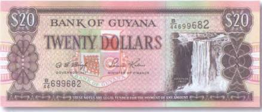
По сравнению с Анхелем он настоящая кроха. Всего какие-то 225 м. Но ведь это как посмотреть! Дело в том, что Кайетур в большой чести у гостей Гайаны. И они никогда не упустят шанса отправиться в одноименный национальный парк, чтобы увидеть это чудо природы. Кстати, с языка местных индейцев название государства Гайана (Гвиана) переводится как «земля вод». Оно и понятно, там на одной только реке Потаро имеются два крупных каскада. Один из них — уже упомянутый выше Кайетур. А другой, что вдвое выше, — водопад Рорайма. Его высота составляет 457 м.
Южная Америка вообще богата на живописные виды срывающихся со скал потоков. Особенно впечатляющими кулисами водопады обзаводятся в сезон дождей, когда неисчислимые реки и речушки в одночасье разбухают, превращаясь в рычащих и неукротимых монстров. Их желтые от ила воды заливают берега, сметая все на своем пути. Превосходное изображение таких срывающихся вниз потоков украсило оборотную сторону аргентинской боны в 10 песо 1976 г. (рис. 154).
В период дождей все живое старается держаться подальше от беснующихся вод. Близость рек становится опасной как никогда. И все-таки находятся сорвиголовы, которые пренебрегают всякой осторожностью. Они только и ждут того момента, когда обычно спокойные реки становятся кошмарными бестиями. Серферы-экстремалы (англ, surfing — «скольжение по волнам») прыгают в бушующие потоки с зависающих над водой вертолетов и отправляются в ультимативное путешествие по волнам с абсолютно непредсказуемым концом. И мода на подобные виды спорта в последние годы растет угрожающими темпами.
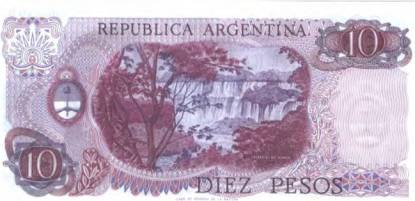
Впрочем, пока еще такое времяпрепровождение скорее исключение, нежели правило. Ведь куда приятнее и уж тем более безопаснее просто побродить вблизи живописных каскадов. Когда над головой безоблачное небо, а на коже — сверкающие капли брызг. Изображение купающихся в водопаде людей встречается на купюре острова Ямайка в 100 долларов 2001 г. (рис. 155).
Бумажные денежные знаки Африки нередко украшают великолепные картины природы — виды, которыми любовались еще первые европейцы, путешествующие по таинственному материку. Разглядывая такие банкноты, трудно отделаться от ощущения, будто перед тобой яркие иллюстрации из каталога какого-нибудь туристического бюро. В этом легко убедиться, посмотрев на бону британских африканских колоний в 20 шиллингов 1954 г. (рис. 156).
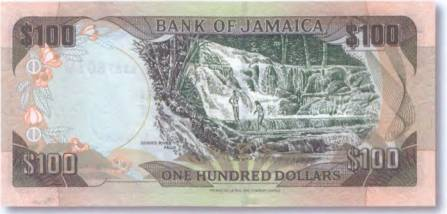
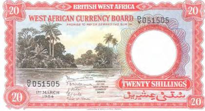
Ангола — государство, расположенное на юго-западе материка, — не может похвастать выдающимися историческими достопримечательностями, но природа обошлась с ней более чем щедро. Великолепные побережья сменяются влажными экваториальными лесами, где еще достаточно мест, не изведанных человеком. А национальные парки Кисама, Камея и Порту-Алешандри предоставляют достаточно места слонам, носорогам, буйволам и десяткам видов антилоп. Ангола — это еще и страна контрастов. Безжизненной пустыне Намиб противостоят великолепные и наполненные жизнью водопады. Кстати, водопады Анголы относятся к красивейшим в мире. Самые знаменитые из них — это Кедас-до-Каландула и Кедас-до-Куанза, расположенные вблизи второго по величине города страны Маланже. Изображение каскадов Кедаса-до-Каландулы имеется на бонах Анголы в 1000 эскудо 1972 г. (рис. 157), а также 1973 г.
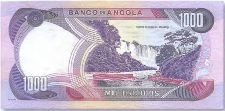
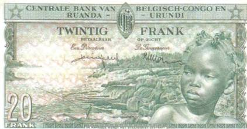
Страну пересекают многочисленные реки, самые крупные из которых Замбези, Касаи и Конго. Они берут свое начало в горах и на своем пути к морю образуют множество живописных каскадов. Срывающиеся вниз потоки воды сопровождаются типичным шумом, который слышен на большом расстоянии, мириадами брызг и неотъемлемой частью любого водопада — радугами. Нередко у водопадов можно встретить и местных рыбаков, как это показано на боне Бельгийского Конго в 20 франков 1959 г. (рис. 158).
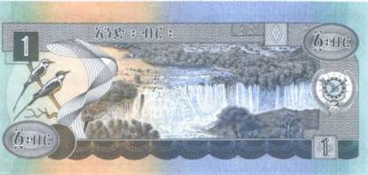
На купюре Эфиопии в 1 бирр 1981 г. (рис. 159) запечатлен водопад Тиссисат, потоки которого обрушиваются вниз с высоты 50 м. Местные называют его Тис Аббай. Аббай — это эфиопское название Нила, а слово «тис» переводится как «дым». В итоге получается довольно поэтическое название «Курящийся Нил». Вот как описывал свою первую встречу с водопадом Тиссисат знаменитый исследователь и путешественник Тур Хейердал: «Тут же впереди снова показалось русло Нила, но это была картина безумного хаоса. Великая река была разорвана поперек во всю свою ширину и могучей стеной уходила отвесно вниз. Впереди нас, по бокам, вверху, внизу падали с уступа на уступ беснующиеся белые каскады, вода бурлила, рокотала, кипела, пенилась, курилась».
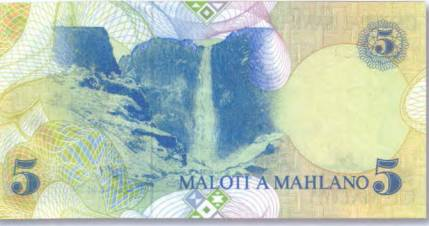
Голубой Нил вытекает из озера Тана, которое лежит высоко в горах Эфиопии. А от его истоков водопад Тис Аббай отделяют 40 км.
Сколько в Африке водопадов, точно, наверное, не знает никто. Сами подумайте, в одном только Лесото (небольшое государство в Южной Африке) насчитывается 3000 каскадов. Его так и называют — страной 3000 водопадов. Но в принципе это и не важно, сколько же их вообще. Главное, что все они не похожи друг на друга. А некоторые из них еще и настолько удивительны, что вполне могут претендовать на роль единственных в своем роде. Как, к примеру, водопад Малецуньяне все в том же Лесото. Зимой он замерзает. Так что с обрыва в пропасть свешивается огромная скрученная жгутом колонна. И над всем этим сказочным великолепием царит абсолютная тишина. Один из водопадов Лесото увековечен на банкноте государства номиналом в 5 малоти 1989 г. (рис. 160).
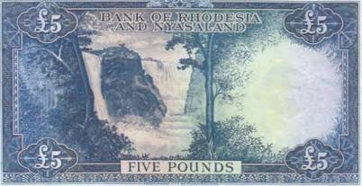
В Южной Африке находится и второй по величине (по высоте!) водопад мира. Это — Тугела, расположенный на одноименной реке. Тугела ниспадает пятью узкими каскадами с восточного обрыва Драконовых гор. С точной его высотой ученые до сих пор не могут определиться. Один раз называется цифра в 933 м, другой раз — в 953 м. А в лексиконах и туристических справочниках чаще указывается средняя величина — 947,8 м. Впечатляющее зрелище представляет водопад Лофой в Заире. Вода срывается там с высоты в 335 м. А вот водопад Ауграбис, который находится на реке Оранжевой и имеет в высоту 146 м, относится к самым шумным. Его название с языка готтентотов так и переводится «очень шумное место». Интересное изображение срывающейся в пропасть воды можно видеть и на боне Родезии номиналом в 5 фунтов 1961 г. (рис. 161).
Впрочем, что касается Родезии (сегодня Зимбабве), то, помимо знаменитого на весь мир водопада Виктория, она может похвастать и еще одним достаточно известным каскадом — Калембо. Известность последний приобрел благодаря одной сенсационной археологической находке, которая в ученых кругах получила название «родезийского дома». Это небольшое каменное строение со стенами, крышей и дверью считается древнейшим из всех известных искусственных сооружений (жилищ!) человека. Его возраст… 57 тыс. лет!
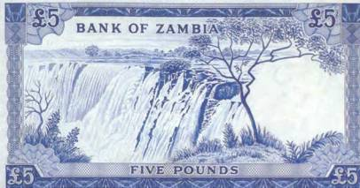
На вопрос: «Какой из водопадов самый популярный в мире?» — большинство опрошенных, скорее всего, назвали бы два: Ниагарский (река Ниагара в Северной Америке) и водопад Виктория (река Замбези в Африке). Последнему посвящена оборотная сторона боны Замбии в 5 фунтов 1964 г. (рис. 162).
Водопад Виктория был открыт в ноябре 1855 г. шотландским миссионером и исследователем Дэвидом Ливингстоном. Это один из самых широких водопадов мира. Его протяженность составляет 1800 м, в то время как высота — всего 120 м. Находится он на границе двух государств — Замбии и Зимбабве, которая протянулась по реке Замбези. Ливингстон назвал водопад в честь английской королевы Виктории. Он посчитал виды этого чуда природы столь прекрасными, «что они должны были радовать ангелов в полете». Еще в колониальные времена у водопада со стороны Замбии был установлен памятник его первооткрывателю. Говорят, что английская королева Елизавета во время своего посещения водопада Виктория, сняла туфли и босиком приблизилась к памятнику Ливингстона. А еще говорят, что с одного места невозможно охватить взглядом все каскады Виктории. Видимо, поэтому на бонах Родезии демонстрировались лишь отдельные его участки (рис. 163).
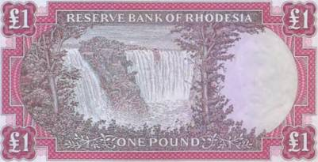
В водопаде Виктория много необычного. Во-первых, это туман, образующийся в результате падения огромной массы воды, который поднимается на несколько сот метров и виден на удалении в несколько десятков километров. Примерно на таком же расстоянии можно слышать и гул водопада. Но, пожалуй, самым удивительным в водопаде Виктория являются его лунные радуги. Это редчайшее явление наблюдалось лишь у нескольких водопадов в мире. Особенно роскошны ночные радуги над Викторией в октябре — ноябре. Однако для этого необходимы полная луна и ливневый дождь. Вообще-то это довольно редкое атмосферное явление, но в самом радужном уголке земли (одно из названий водопада Виктория) шансы увидеть его выше, чем где-нибудь еще.
Рисунки водопадов встречаются и на бумажных деньгах других африканских стран. Как, например, на банкноте Свазиленда в 5 эмалангени 1984 г. (рис. 164).
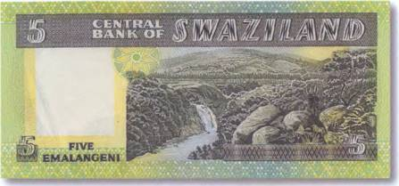
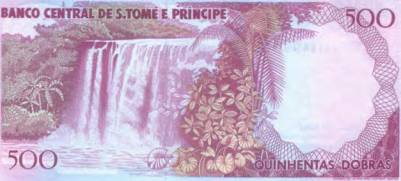
Одному из своих водопадов банкноту в 500 добр 1977 г. (рис. 165) посвятило и государство Сан-Томе и Принсипи. Самым красивым каскадом островитяне считают Каскадес-Сан-Николауш, который находится недалеко от города Тринидад и ежегодно привлекает к себе внимание тысяч туристов.